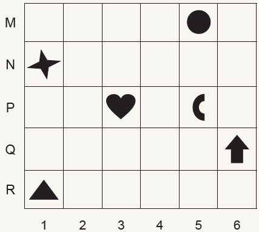
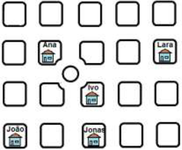
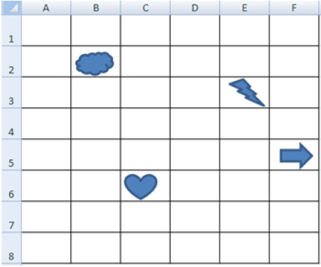
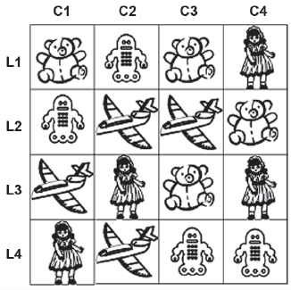
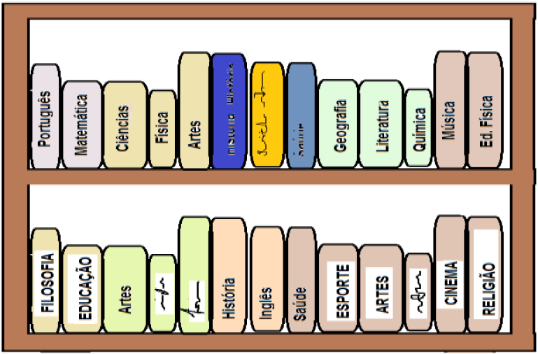
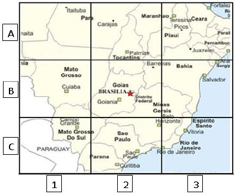
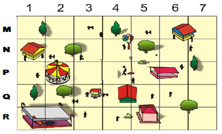
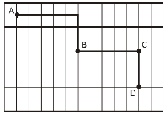
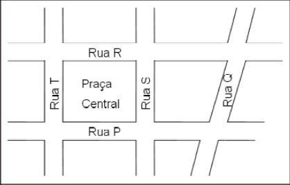

O desenho que está localizado na posição (5, P) é
O desenho que está localizado na posição (6, Q) é
Ivo está interessado em descobrir quais dos amigos mora mais próximo dele. Localizou sua casa e marcou com seu nome. Localizou também a casa dos seus quatro amigos e marcou com o nome de cada um.
Observa a figura abaixo.

Quem mora mais perto de Ivo?
Observando a tabela podemos constatar que as figuras: nuvem, raio, coração e seta, estão respectivamente nas seguintes localizações:

Na barraca de tiro ao alvo do parque havia alguns brinquedos conforme a figura abaixo. Lúcia derrubou o brinquedo que estava na segunda linha e terceira coluna.

Qual brinquedo Lúcia derrubou?
Observe as posições dos livros na estante abaixo.

Considerando que você está em frente desta estante, o livro de Ciências é o terceiro à sua
A figura abaixo é um fragmento do mapa do Brasil. Nela, a localização do estado de Goiás é indicada por B2. Desta forma, a identificação do estado de Ceará é:

Observe o parque de diversões representado abaixo: Assinale a alternativa que mostra a localização do carrossel.

Observe na figura abaixo, o caminho percorrido por Tiago. Ele saiu do ponto A e chegou ao ponto B.

Como ele fez para chegar ao ponto B?
A figura a seguir representa um trecho do mapa de um bairro.

Se a praça central tem a forma de um retângulo, então a rua T é paralela à rua